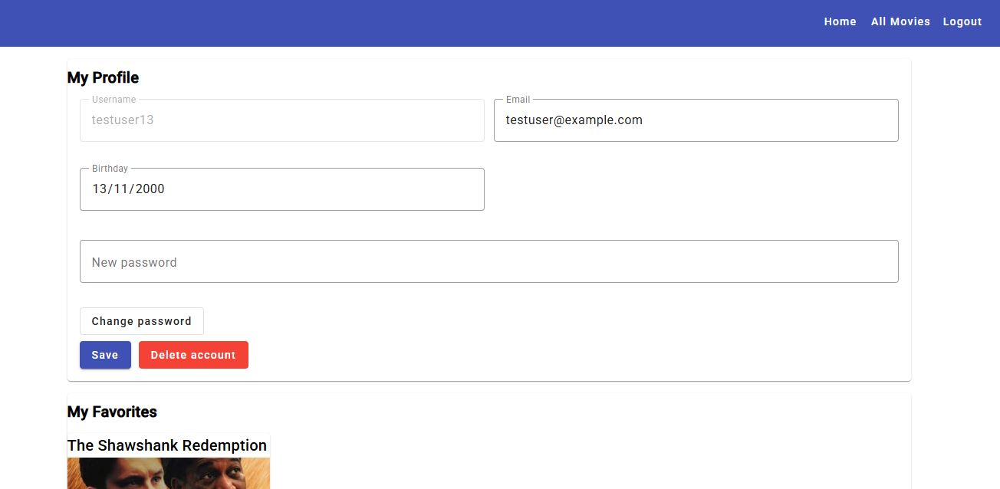
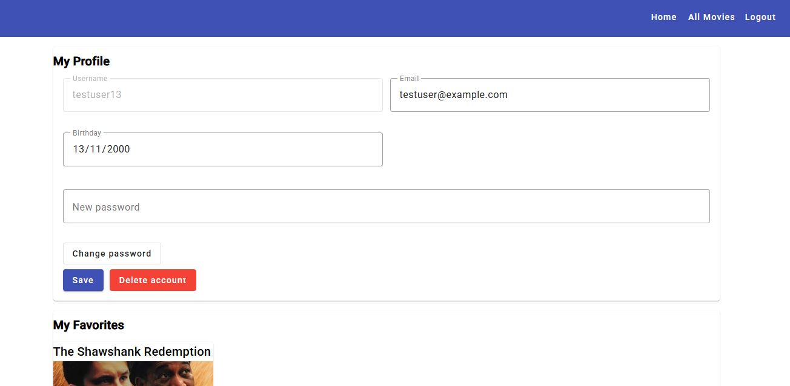
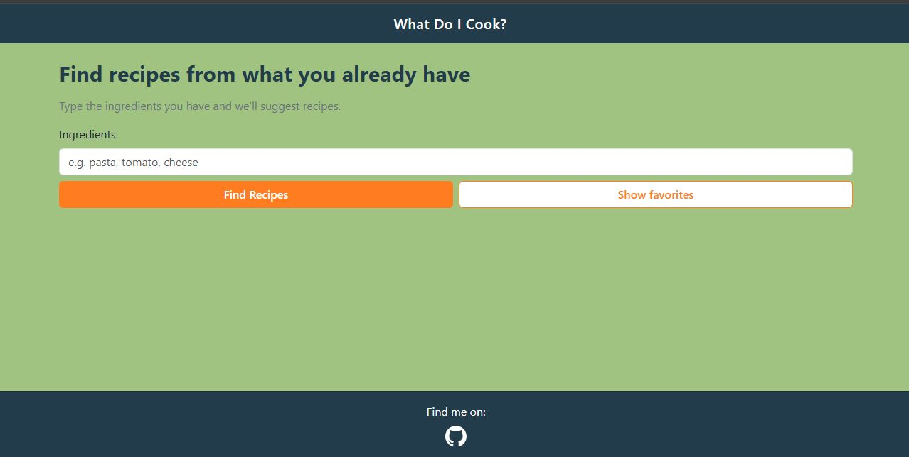
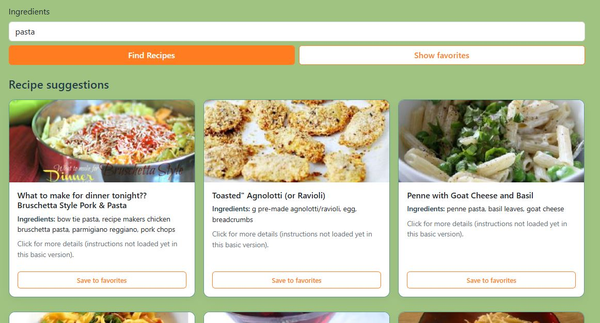
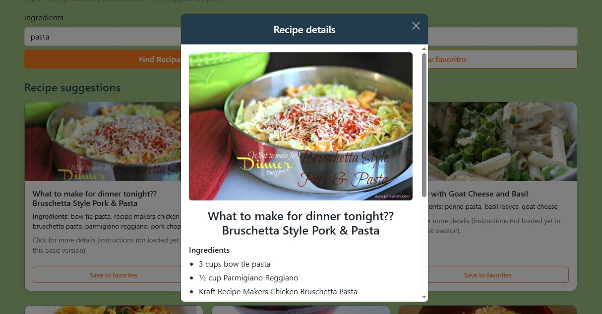
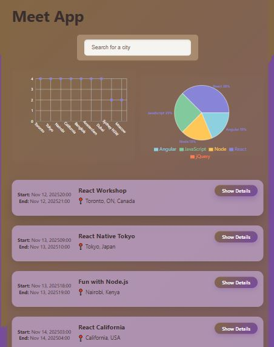
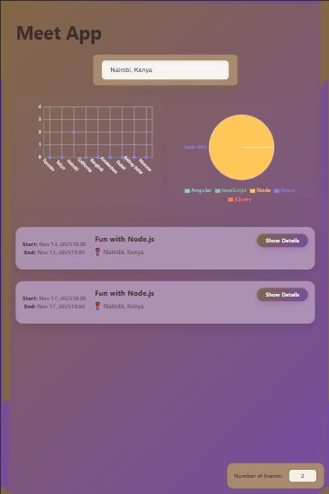
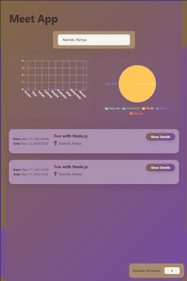

Proyectos
Cada tarjeta a continuación incluye un breve resumen, el stack tecnológico, capturas de pantalla (haz clic en la imagen para abrir la galería) y enlaces al código y vista previa en vivo.
MyFlix App


 


Resumen: Una aplicación de películas full-stack construida paso a paso: primero creando una API REST segura con Node/Express, y luego desarrollando dos front-ends (uno en React y otro en Angular) que consumen el mismo backend.
Stack Backend: Node.js, Express, MongoDB Atlas, JWT, Passport, bcrypt, Render.
Stack Frontend: Angular (Material, TypeScript) y React (Bootstrap, ES6+).
What Do I Cook?



Resumen: Un asistente de cocina full-stack que permite a los usuarios encontrar recetas basadas en los ingredientes que ya tienen. Utiliza una API personalizada que conecta con Spoonacular.
Stack: Node.js, Express, JavaScript vanilla, Fetch API, LocalStorage, Bootstrap 5.
Meet App
 

Resumen: Una aplicación web progresiva (PWA) serverless construida con React que se conecta a la API de Google Calendar. Incluye visualización de datos y soporte offline.
Stack: React, AWS Lambda, Google Calendar API, Recharts, TDD (Jest/Cucumber).
Pokedex App


Resumen: Aplicación web que consume la PokeAPI para mostrar una lista interactiva de Pokémon. Mi primer proyecto en JavaScript enfocado en manipulación del DOM.
Stack: HTML5, CSS3, JavaScript Vanilla, PokeAPI, Bootstrap 4.